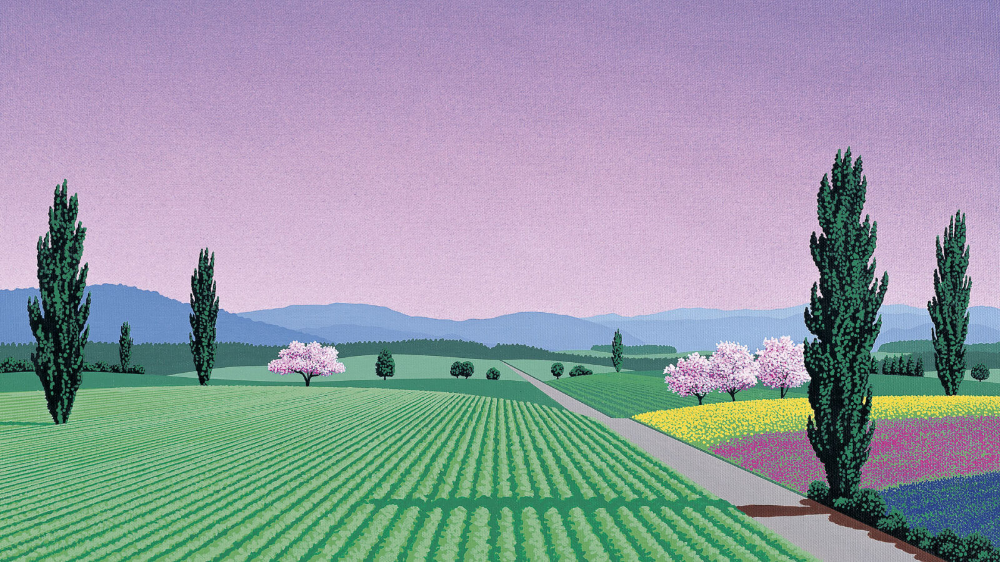
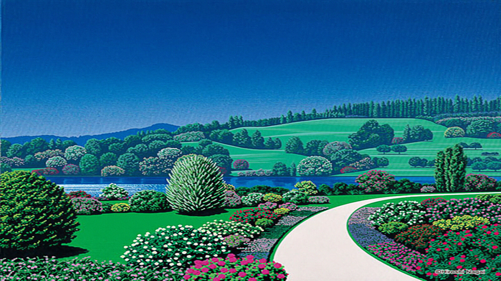
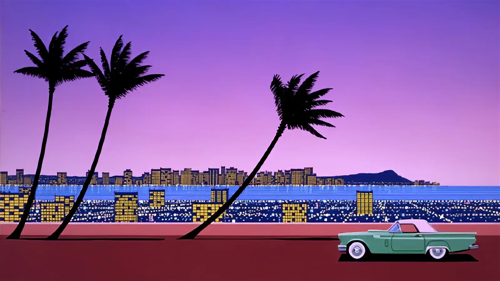

<!DOCTYPE html>
<html lang="en">

<head>
  <meta charset="UTF-8">
  <meta http-equiv="X-UA-Compatible" content="IE=edge">
  <link rel="preconnect" href="https://fonts.googleapis.com">
  <link rel="preconnect" href="https://fonts.gstatic.com" crossorigin>
  <link href="https://fonts.googleapis.com/css2?family=Barlow:wght@600&family=Fraunces:wght@700;900&display=swap"
    rel="stylesheet">
  <link rel="stylesheet" href="https://cdnjs.cloudflare.com/ajax/libs/animate.css/4.1.1/animate.min.css" />
  <link href="https://unpkg.com/aos@2.3.1/dist/aos.css" rel="stylesheet">
  <!-- CSS only -->
  <link href="https://cdn.jsdelivr.net/npm/bootstrap@5.2.0-beta1/dist/css/bootstrap.min.css" rel="stylesheet"
    integrity="sha384-0evHe/X+R7YkIZDRvuzKMRqM+OrBnVFBL6DOitfPri4tjfHxaWutUpFmBp4vmVor" crossorigin="anonymous">
  <link href="https://unpkg.com/aos@2.3.1/dist/aos.css" rel="stylesheet">
  <link rel="stylesheet" href="./sass/style.css">
  <title>proyecto</title>
  <meta name="Hiroshi nagai" content="Fan page de hiroshi nagai artista pintor estilo citypop 70s 80s">
  <meta name="keywords" content=" ilustraciones, artista japones, citypop, salvador dalí, pintura,">

</html>
</head>


<body>
  <header>
    <div class="header__logo">
      <h1> Hiroshi Nagai</h1>
    </div>

    <!-- NAVBAR -->
    <nav class="navbar navbar-expand-lg">
      <div class="container-fluid">
        <button class="navbar-toggler" type="button" data-bs-toggle="collapse" data-bs-target="#navbarTogglerDemo01"
          aria-controls="navbarTogglerDemo01" aria-expanded="false" aria-label="Toggle navigation">
          <span class="navbar-toggler-icon"></span>
        </button>
        <div class="collapse navbar-collapse" id="navbarTogglerDemo01">
          <a class="navbar-brand" href="home.html">
          </a>
          <ul class="navbar-nav me-auto mb-2 mb-lg-0">
            <li class="nav-item">
              <a class="nav-link active" aria-current="page" href="home.html">Home</a>
            </li>
            <li class="nav-item">
              <a class="nav-link " href="Profile.html">Profile</a>
            </li>
            <li class="nav-item">
              <a class="nav-link " href="Gallery.html">Gallery</a>
            </li>
            <li class="nav-item">
              <a class="nav-link " href="Contact.html">Contact</a>
            </li>
            <li class="nav-item">
              <a class="nav-link " href="Others.html">Others</a>
            </li>
          </ul>

        </div>
      </div>
    </nav>

  </header>

  <section>

    <div class="section__contenedor">
      <h2> Profile </h2>
    </div>


    <div class="card">
      <div class="row g-0">
        <div class="col-5 col-sm-4">
          
        </div>
        <div class="col-7 col-sm-8">
          <div class="card-body">

            <p class="card-text text-center">Las ilustraciones del artista japonés Hiroshi Nagai transportan, tan solo
              en un par de
              segundos, a envidiables escenarios vacacionales que cuentan con un peculiar estilo retro.

              Nagai, quien nació y fue criado en la refectura de Tokushima, fue en la década de los 80 uno de los
              pintores más reconocidos de Japón, pero con el paso del tiempo se supo reinventar y ahora es mundialmente
              reconocido por las ilustraciones que lleva a cabo.

              Su amor por el arte nace de su padre, quien también fue pintor pero jamás logró alcanzar la fama.
              Debido a esto Hiroshi Nagai, quien actualmente cuenta con 73 años, decidió mudarse de Tokushima a Tokio
              para
              poder prepararse de la mejor forma posible</p>

          </div>
        </div>
      </div>
      
      <div class="card">
        <div class="row g-0">
          <div class="col-5 col-sm-4">
            
          </div>
          <div class="col-7 col-sm-8 mb-5">
            <div class="card-body">

              <p class="card-text text-center"> Las obras de René Magritte y Salvador Dalí, así como el pop art,
                influenciaron de forma notable el trabajo de este creativo, quien también logró destacar como pintor.
                Un acontecimiento que marcó de por vida a Nagai fue un viaje que realizó a Estados Unidos en 1973 ya que
                todas sus ilustraciones parecen salidas de dicho momento, pues cuentan con el glamur y la estética que
                en
                aquella época imperaban.</p>

            </div>
          </div>
        </div>
      </div>

      
      <div class="card">
        <div class="row g-0">
          <div class="col-5 col-sm-4">
            
          </div>
          <div class="col-7 col-sm-8 ">
            <div class="card-body">

              <p class="card-text text-center">Es importante señalar que debido a la popularidad que alcanzó como pintor
                en los 80,
                Hiroshi Nagai fue el encargado de realizar las portadas de varios discos en Japón, siendo A Long
                Vacation,
                de Eiichi Ohtaki, el más famoso.

                Actualmente, la mayoría de las ilustraciones que lleva a cabo Hiroshi Nagai cuentan con un aire
                setentero
                en
                el que palmeras, piscinas, el mar, el cielo azul y espectaculares coches llaman la atención por
                completo.

                Casi 30 años después, Hiroshi Nagai vuelve a disfrutar de una gran fama a nivel internacional gracias a
                las
                ilustraciones que hace para los discos de nuevas generaciones de músicos.</p>

            </div>
          </div>
        </div>
      </div>
      

  </section>

  <!-- FOOTER -->
  <div class="container-fluid">
    <div class="row p-2 pb-2 text-bg-dark p-3">

      <div class="col-xs-12 col-md-6 col-lg-3">
        <p class="h3">Hiroshi Nagai</p>
      </div>

      <div class="col-xs-12 col-md-6 col-lg-3">
        <p class="h5 mb-3">Redes</p>
        <div class=mb-3>
          <a class="text-secondary text-decoration-none" href=" https://www.instagram.com/hiroshipenguinjoe/"
            target="_blank"> Instagram</a>
        </div>
        <div class=mb-3>
          <a class="text-secondary text-decoration-none" href="http://www.hiroshinagai.com/" target="_blank">Official
            Page</a>
        </div>
      </div>

      <div class="col-xs-12 col-md-6 col-lg-3">
        <p class="h5 mb-3">Links</p>

        <div class=mb-3>
          <a class="text-secondary text-decoration-none " href="#">Terms & Conditions</a>
        </div>
        <div class=mb-3>
          <a class="text-secondary text-decoration-none " href="#">Privacy Policy</a>
        </div>
      </div>

      <div class="col-xs-12 col-md-6 col-lg-3">
        <p class="h5 mb-3">Contacto</p>
        <p class=" text-secondary text-decoration-none ">Mail: mochips@hiroshinagai.com fax: 03-(6411) -8218 </p>
      </div>


      <div class="col-xs-12 pt-5">
        <p class="text-white text-center"> Copyright © - All rights reserved </p>
      </div>
    </div>

  </div>


  <!-- JavaScript Bundle with Popper -->
  <script src="https://cdn.jsdelivr.net/npm/bootstrap@5.2.0-beta1/dist/js/bootstrap.bundle.min.js"
    integrity="sha384-pprn3073KE6tl6bjs2QrFaJGz5/SUsLqktiwsUTF55Jfv3qYSDhgCecCxMW52nD2"
    crossorigin="anonymous"></script>
  <script src="https://unpkg.com/aos@2.3.1/dist/aos.js"></script>
  <script>
    AOS.init();
  </script>
</body>

</html>